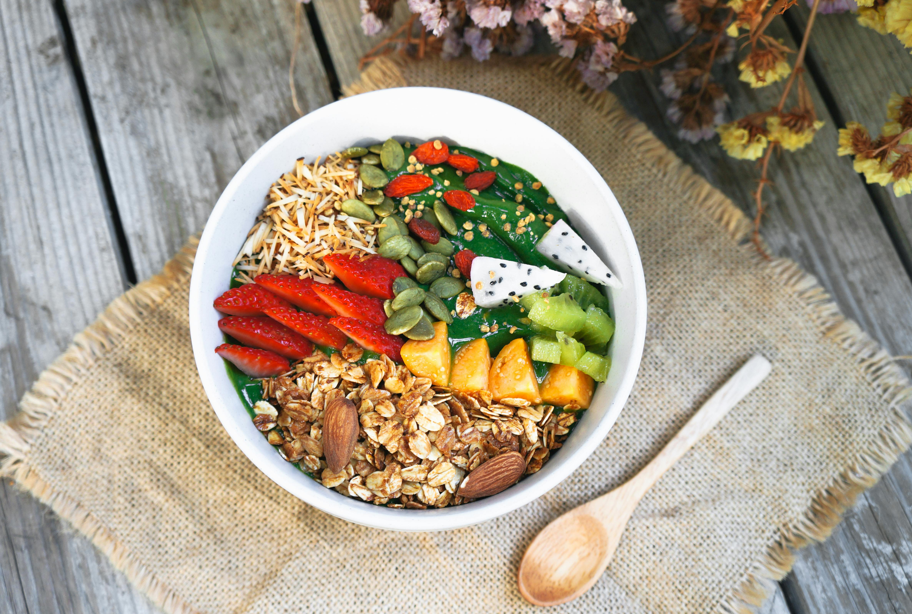
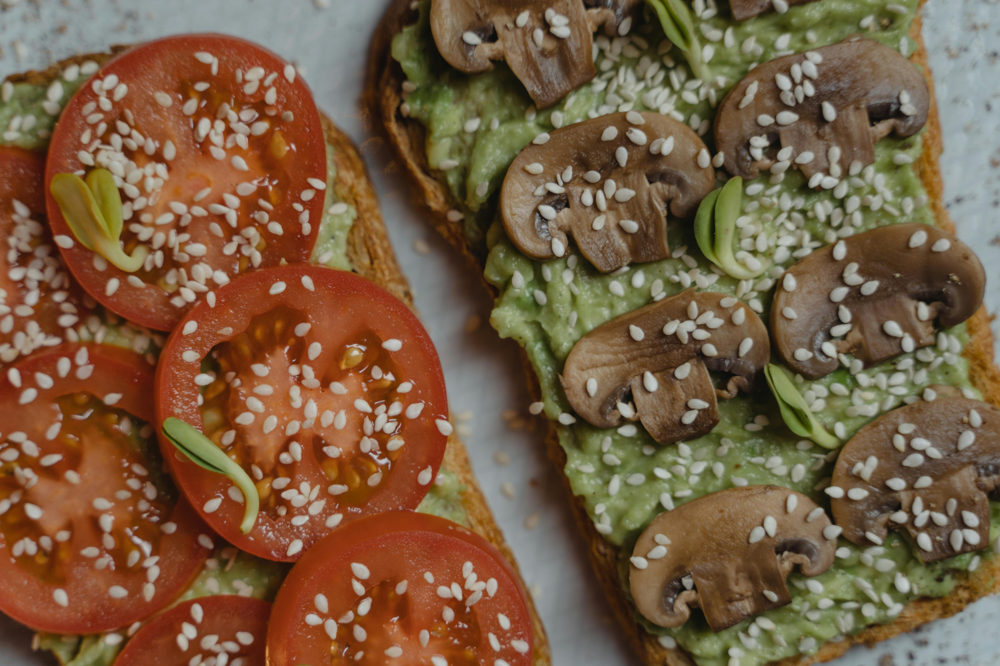
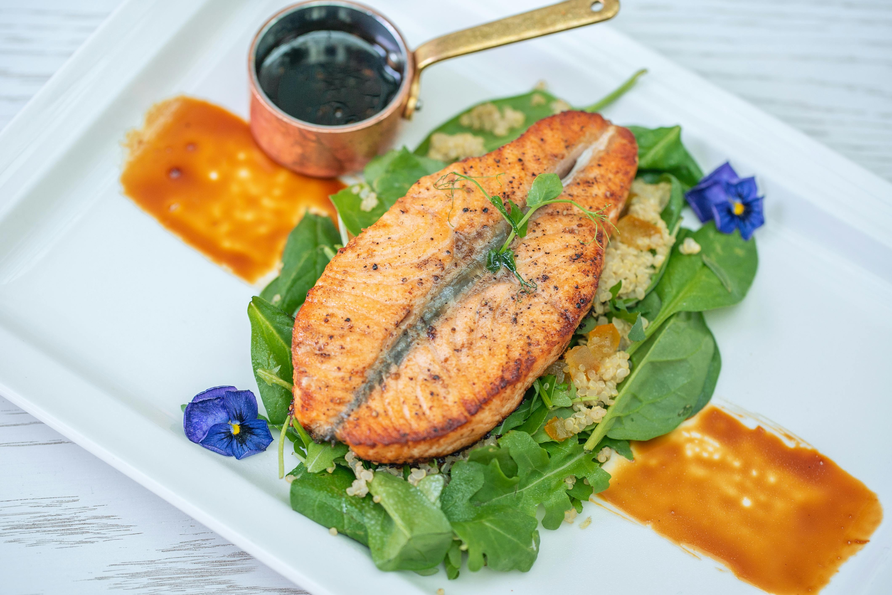
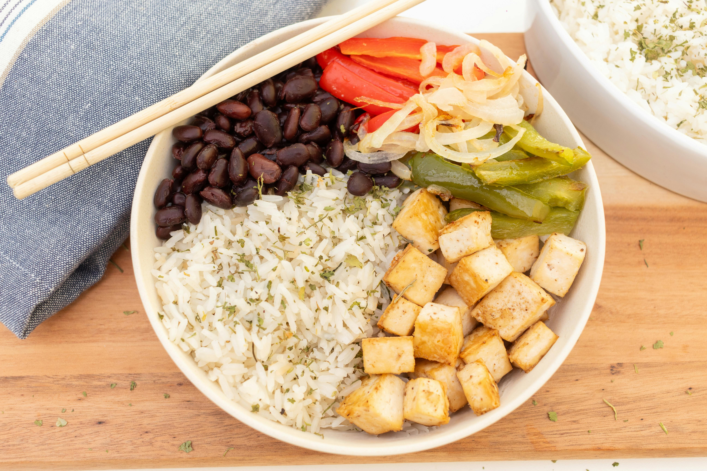
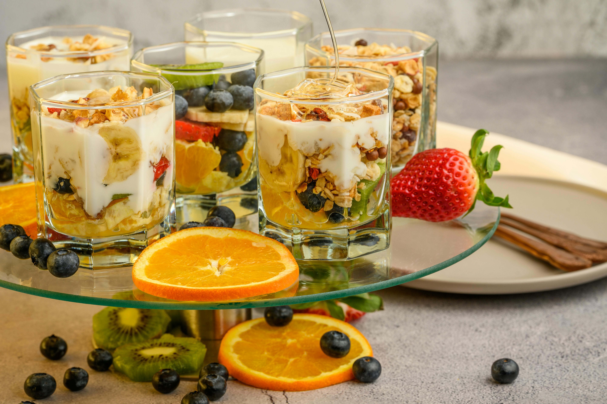
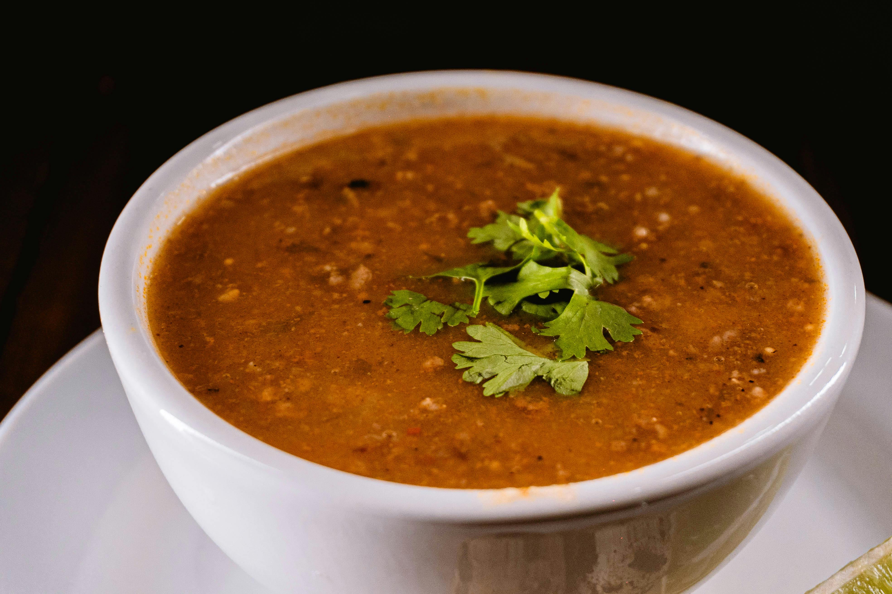
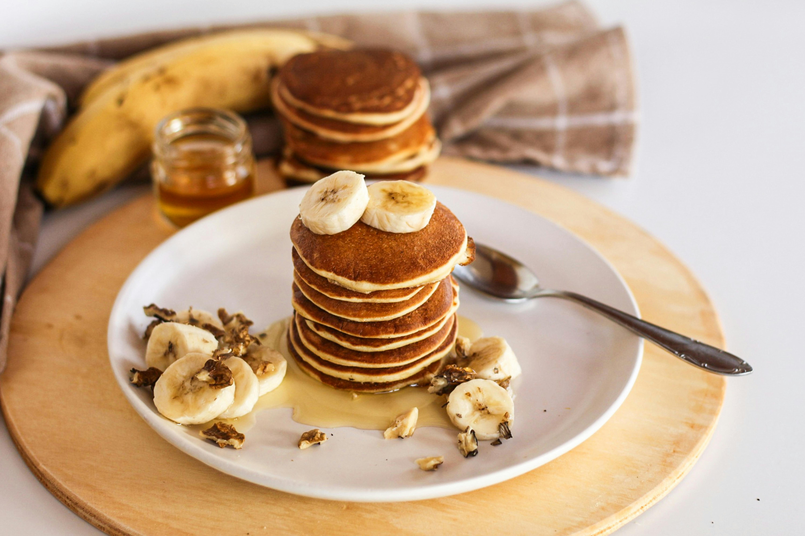

Explore our simple, healthy recipes
Discover eight quick, whole food-dishes that fit real life schedules that taste amazing. Use the search to find the recipe by name or by ingredient or simply scroll the list and let something delicious catch your eye

Mediterranean Chickpea Salad
A refreshing protein-packed salad tossed in a lemon-olive oil dressing.

Avocado & Tomato Wholegrain
Creamy avocado spread over toasted wholegrain bread,topped with juicy

One-pan Lemon Garlic Salmon
A 15-minute weeknight dinner of flacky salmon and tender asparagus

Quinoa Veggie Power Bowl
A balanced bowl of fluffy quinoa,roasted veggies and healthy fats.

Sweet Potato Black Beans Tacos
Smoky roasted sweet potatoes and black beans tucked into warm tortilas

Greek Yogurt Berry Parfait
Layers of Creamy yogurt, fresh berries and crunchy oats for a high-protein snack.

Lentil & Spinach Soup
A hearty 30-minute soup rich in plant protein and iron

Banana Oat Pancakes
Flour-free panacakes sweetened naturally with ripe bananas